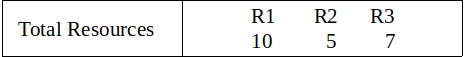
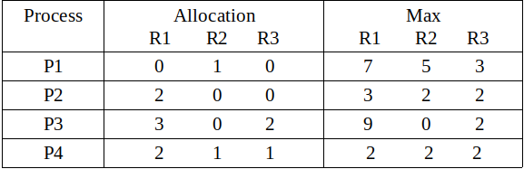
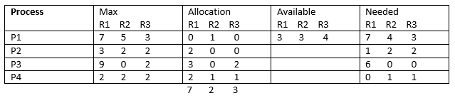

先决条件 - 资源分配图（RAG） ， 银行家算法 ， 银行家算法 程序
Banker算法是一种资源分配和死锁避免算法。 该算法测试安全性，模拟所有资源的预定最大可能量的分配，然后在决定是否允许继续分配之前进行“s状态”检查以测试可能的活动。
简单来说，它检查任何资源的分配是否会导致死锁，OR是否可以安全地将资源分配给进程，如果没有，则资源不会分配给该进程。 确定安全序列（即使只有1）将确保系统不会陷入死锁。
银行家的算法通常用于查找是否存在安全序列。 但在这里，我们将确定安全序列的总数并打印所有安全序列。
使用的数据结构是：
- 可用的矢量
- 最大矩阵
- 分配矩阵
- 需要矩阵
例：
Input :   Output : Safe sequences are: P2--> P4--> P1--> P3 P2--> P4--> P3--> P1 P4--> P2--> P1--> P3 P4--> P2--> P3--> P1 There are total 4 safe-sequences
说明 -
总资源为R1 = 10，R2 = 5，R3 = 7，分配的资源为R1 =（0 + 2 + 3 + 2 =）7，R2 =（1 + 0 + 0 + 1 =）2，R3 =（0 + 0 + 2 + 1 =）3。因此，剩余资源是R1 =（10 - 7 =）3，R2 =（5 - 2 =）3，R3 =（7 - 3 =）4。
剩余可用=总资源 - 分配的资源
和
剩余需求=最大 - 分配

所以，我们可以从P2或P4开始。 在Banker算法的第一次或第二次尝试步骤中，我们无法满足P1或P3的可用资源的剩余需求。 只有四种可能的安全序列。 这些是 ：
P2-> P4-> P1-> P3
P2-> P4-> P3-> P1
P4-> P2-> P1-> P3
P4-> P2-> P3-> P1
代码 -
// CPP Program to Print all possible safe sequences using banker's algorithm
#include <iostream>
#include <string.h>
#include <vector>
// total number of process
#define P 4
// total number of resources
#define R 3
// total safe-sequences
int total = 0;
using namespace std;
// function to check if process
// can be allocated or not
bool is_available(int process_id, int allocated[][R],
int max[][R], int need[][R], int available[])
{
bool flag = true;
// check if all the available resources
// are less greater than need of process
for (int i = 0; i < R; i++) {
if (need[process_id][i] > available[i])
flag = false;
}
return flag;
}
// Print all the safe-sequences
void safe_sequence(bool marked[], int allocated[][R], int max[][R],
int need[][R], int available[], vector<int> safe)
{
for (int i = 0; i < P; i++) {
// check if it is not marked
// already and can be allocated
if (!marked[i] && is_available(i, allocated, max, need, available)) {
// mark the process
marked[i] = true;
// increase the available
// by deallocating from process i
for (int j = 0; j < R; j++)
available[j] += allocated[i][j];
safe.push_back(i);
// find safe sequence by taking process i
safe_sequence(marked, allocated, max, need, available, safe);
safe.pop_back();
// unmark the process
marked[i] = false;
// decrease the available
for (int j = 0; j < R; j++)
available[j] -= allocated[i][j];
}
}
// if a safe-sequence is found, display it
if (safe.size() == P) {
total++;
for (int i = 0; i < P; i++) {
cout << "P" << safe[i] + 1;
if (i != (P - 1))
cout << "--> ";
}
cout << endl;
}
}
// Driver Code
int main()
{
// allocated matrix of size P*R
int allocated[P][R] = { { 0, 1, 0 },
{ 2, 0, 0 },
{ 3, 0, 2 },
{ 2, 1, 1 } };
// max matrix of size P*R
int max[P][R] = { { 7, 5, 3 },
{ 3, 2, 2 },
{ 9, 0, 2 },
{ 2, 2, 2 } };
// Initial total resources
int resources[R] = { 10, 5, 7 };
// available vector of size R
int available[R];
for (int i = 0; i < R; i++) {
int sum = 0;
for (int j = 0; j < P; j++)
sum += allocated[j][i];
available[i] = resources[i] - sum;
}
// safe vector for displaying a safe-sequence
vector<int> safe;
// marked of size P for marking allocated process
bool marked[P];
memset(marked, false, sizeof(marked));
// need matrix of size P*R
int need[P][R];
for (int i = 0; i < P; i++)
for (int j = 0; j < R; j++)
need[i][j] = max[i][j] - allocated[i][j];
cout << "Safe sequences are:" << endl;
safe_sequence(marked, allocated, max, need, available, safe);
cout << "\nThere are total " << total << " safe-sequences" << endl;
return 0;
}
输出：
Safe sequences are: P2--> P4--> P1--> P3 P2--> P4--> P3--> P1 P4--> P2--> P1--> P3 P4--> P2--> P3--> P1 There are total 4 safe-sequences